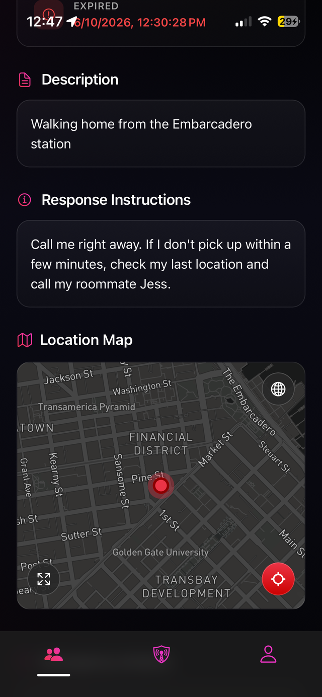

Personal Safety,Intuitive & Accessible
Most safety apps wait for you to ask for help or rely on someone noticing something's wrong. In a real emergency, both are wishful thinking. GuardianLive eliminates this uncertainty. Start a timer before any risky situation, and the clock becomes your lifeline. If it runs out, your contacts are automatically alerted with everything they need to get you help: your live location path, activity details, and video feed (if you started a stream). No calls, no wasted time. Set it and stay protected.
ACTIVE
Run
44:52
Remaining
Location sharing is active. Emergency contacts will be notified if timer expires.
I AM SAFEStop Timer
ALERT NOW
GO LIVE
Timer Details
Modify Time
3
44:52
SOS
Mom
Don't worry, I'm watching
Jordan
I can come pick you up
ALERT
STOP
